Un modèle réutilisable
Préparation des extractions avec Power Query, table de faits de complétude et dimensions date et capteur. Les contrôles portent sur les dates, les doublons, les types et les journées absentes.
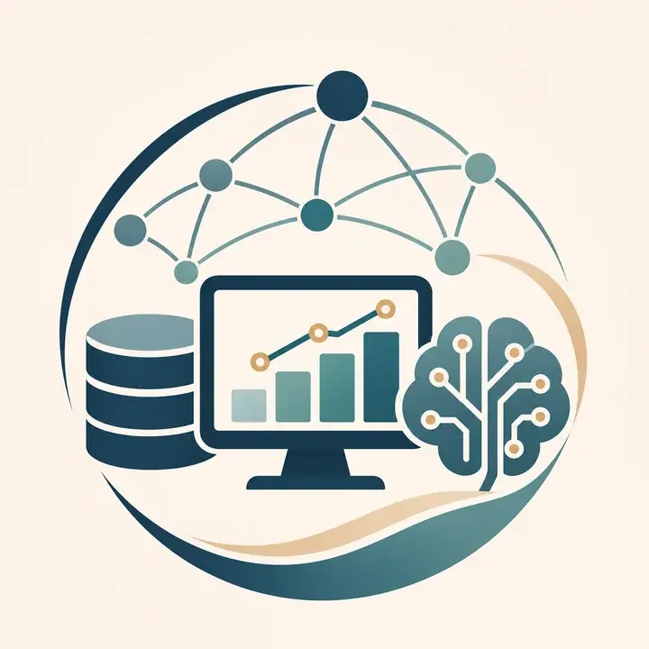
Sara El ImraniData Analyst orientée Data/BI. J’analyse, structure et transforme les données en indicateurs et outils utiles à la décision.
Projet de fin d’études
Stage Data Analyst au Pôle Data de Dijon Métropole
Projet européen RESPONSE · réseau de capteurs MUSTARD.
La question métier
J’ai analysé la complétude des relevés et comparé les extractions avant et après le rattrapage afin de mesurer les données récupérées et de repérer les absences persistantes.
Un point clé du modèle : créer les combinaisons date × capteur, même quand aucune ligne n’existe dans la source. Les jours sans relevé deviennent ainsi visibles dans le diagnostic.
J’ai également conçu une vue cartographique Azure Maps pour situer les capteurs et rapprocher leur statut des relevés manquants ou récupérés.
J’ai publié le rapport Power BI et géré les accès par profil avec la sécurité au niveau des lignes (RLS), afin que chacun consulte les données correspondant à son rôle.
Le fil conducteur
Fiabiliser · automatiser · visualiser
Préparation des extractions avec Power Query, table de faits de complétude et dimensions date et capteur. Les contrôles portent sur les dates, les doublons, les types et les journées absentes.
Indicateurs de complétude avant/après, relevés récupérés, taux de récupération et manquants restants. La heatmap capteur × jour aide à localiser rapidement les anomalies.
Une vue Azure Maps situe les capteurs et met leur statut en regard des indicateurs de complétude et de rattrapage.
Publication du rapport Power BI et gestion des accès par profil grâce au RLS. Documentation des règles de calcul, du nommage des fichiers et des modalités de partage. Piste d’évolution : un inventaire des capteurs avec Power Apps.
Résultat : une chaîne de suivi reproductible, de l’extraction aux visualisations Power BI, pour passer d’une vue globale à l’analyse d’un capteur et d’une période.
Sélection de projets
Sept projets, de la préparation des données à la décision. Découvrez la démarche, les résultats et une sélection de slides pour chacun.
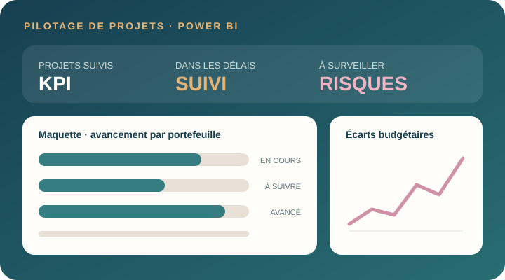
Un tableau de bord multi-niveaux pour suivre les KPI, repérer les projets à risque et analyser retards et écarts budgétaires.
Découvrir le projet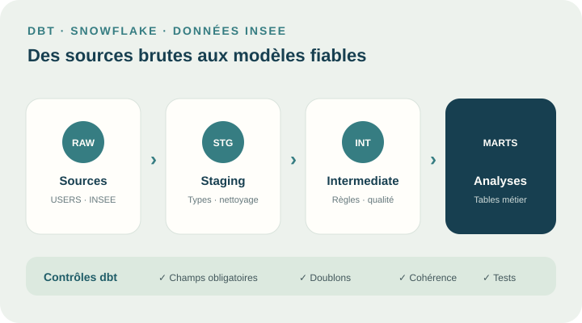
Des données brutes aux analyses : transformation en couches, contrôles de qualité et modèles prêts à l’analyse.
Découvrir le projet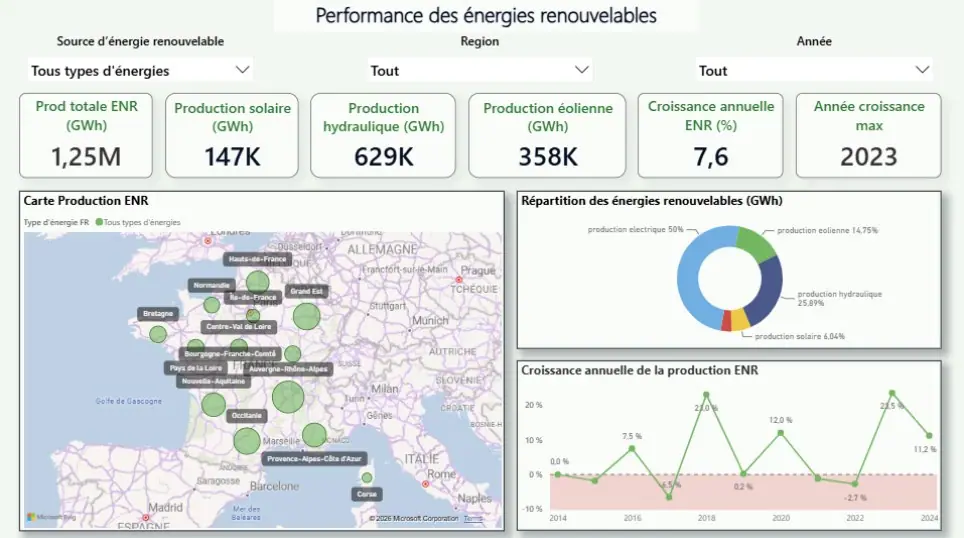
Analyser la production régionale française, comparer la place des ENR en Europe et suivre le mix électrique avec Eco2mix/RTE.
Découvrir le projet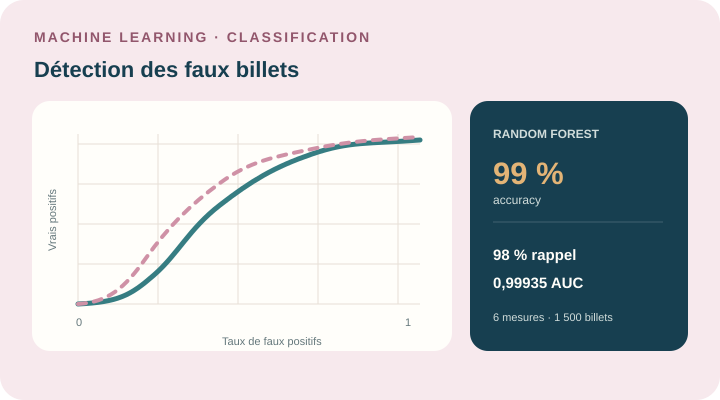
Comparer des modèles de classification et de clustering à partir de mesures géométriques, puis sélectionner un modèle réutilisable.
Découvrir le projet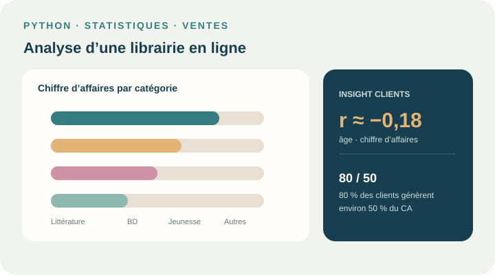
Étudier la performance commerciale et les comportements d’achat avec des analyses temporelles et des tests statistiques.
Découvrir le projet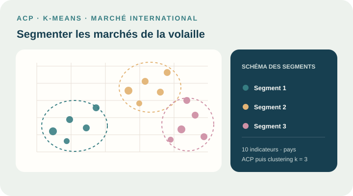
Combiner des indicateurs FAO, Banque mondiale et gouvernance pour segmenter des marchés et prioriser des opportunités.
Découvrir le projet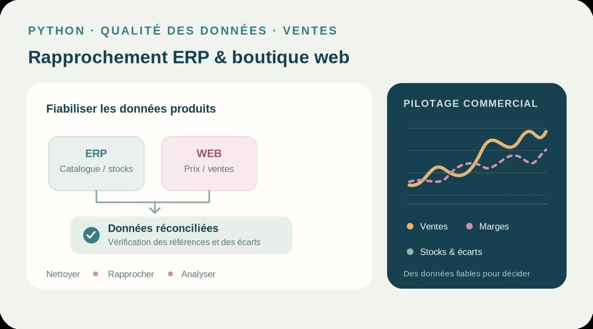
Fiabiliser les données de BottleNeck, rapprocher les sources ERP et web, puis analyser les ventes, les stocks et les marges avec Python.
Découvrir le projetCertificats de réussite
Des formations complémentaires en Data Science, modélisation, BI et apprentissage statistique.
Apprentissage statistique · objets connectés
Transformation des données · dbt Cloud
Conception et modélisation de bases de données
Data visualisation · Power BI
Préparation et analyse de données
Python · bibliothèques de Data Science
SQL · requêtes et exploration de bases de données
Une première expérience de création web · 2024
Lors de mon immersion à Holberton School, j’ai créé un site web en HTML, CSS et JavaScript. Une première mise en pratique du développement web : structurer le contenu, travailler la mise en forme et ajouter des interactions.
Ma boîte à outils
Les outils mobilisés au fil de mes projets, de ma formation et de mes expériences.
Interroger, modéliser et transformer les données.
 SQL
SQL PostgreSQL
PostgreSQL MySQL
MySQL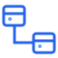
SQL Power Architect Azure
Azure Git
Git
GitHubExplorer les données, entraîner et évaluer des modèles.
 Python
Python Pandas
Pandas NumPy
NumPy scikit-learn
scikit-learn Matplotlib
Matplotlib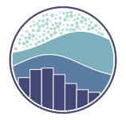
SeabornVisualiser, automatiser et communiquer les résultats.
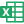
ExcelAzure MapsEn approfondissement : Microsoft Fabric.
Mon fil conducteur : rendre la donnée fiable, compréhensible et utile pour éclairer les décisions.
Restons en contact
Échangeons autour de la data, de la BI et de projets qui rendent les données utiles.
Échanger sur LinkedIn ↗